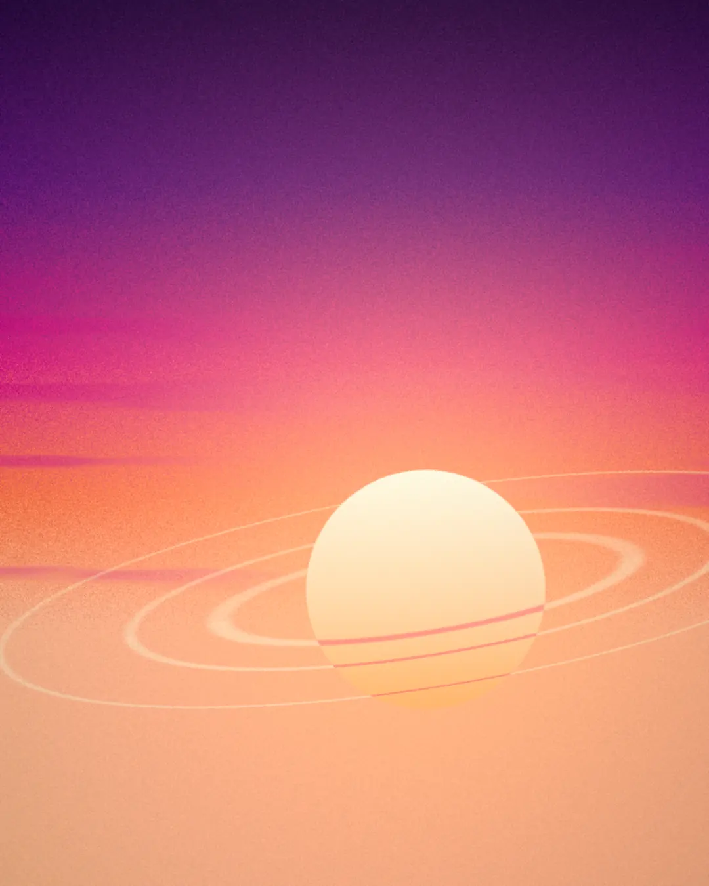
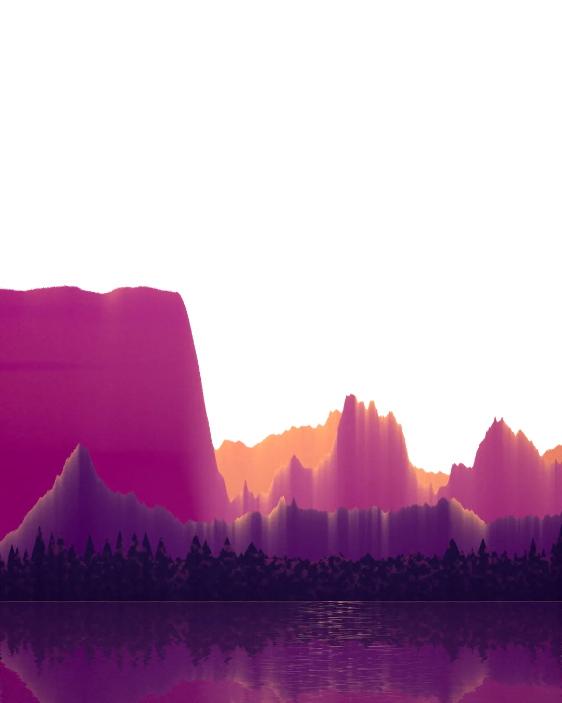
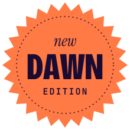
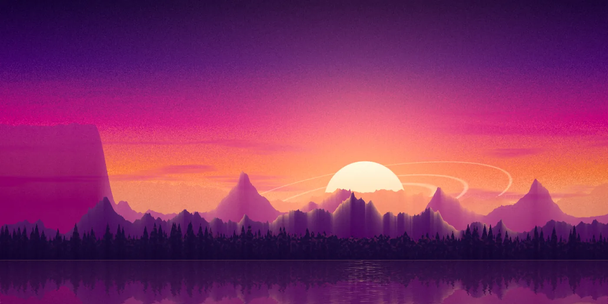
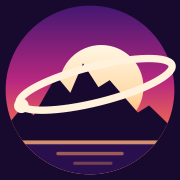
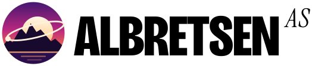
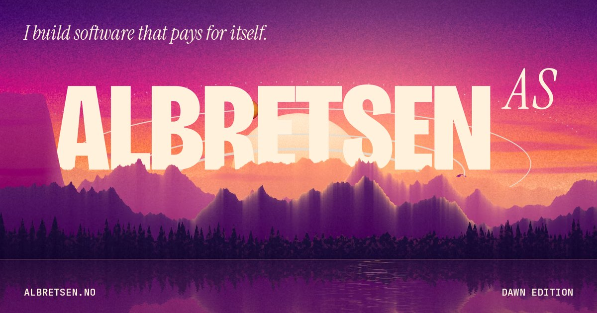
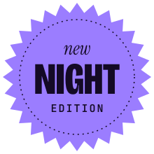
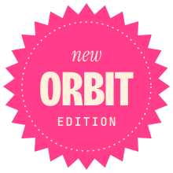
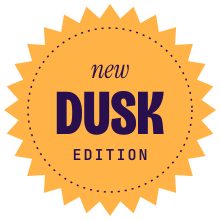

N°1Dawn edition
ALBRETSEN


Software · Agents · Apps — since 2016
Quiet software that pays for itself.



Quiet software that pays for itself.

Inside: four products in orbit, built and run by one person from Norway.
Albretsen AS builds whatever is profitable: apps, SaaS and AI-agent infrastructure.
Albretsen AS is published like a loud, beautiful magazine. The cover is the same Norwegian fjord, painted in grainy infrared gradients, and the edition on the newsstand is whatever the sun is doing over Norway right now: Nocturne, Dawn, Orbit or Dusk. Open the cover and the products are the features inside.
Hero layers are split (sky / land) so the live masthead sits behind the mountains. The edition is picked by js/oslo-sun.js from the sun's real altitude over Oslo; try ?edition=zenith.
Procedural matte paintings (numpy, OKLab gradients, stippled grain on every transition), each exported as AVIF/WebP/JPEG in responsive widths, plus split sky/land layers.


Each product is a pull-out card whose real logo rises over the fjord like a sun. Drag and throw the top card to re-stack, tap to flip it to its fact sheet. Spring physics, no library.
Sphere, three tori and four satellites in three.js, lit by a CC0 Poly Haven HDRI graded infrared. Drag to spin; it springs back to its idle drift. Loads only when scrolled into view.


COVER LIFT and EDITION WIPE run on the live cover at the top of this page: “Open the cover” and the edition buttons. Both are View Transitions, so they are one DOM swap each.





